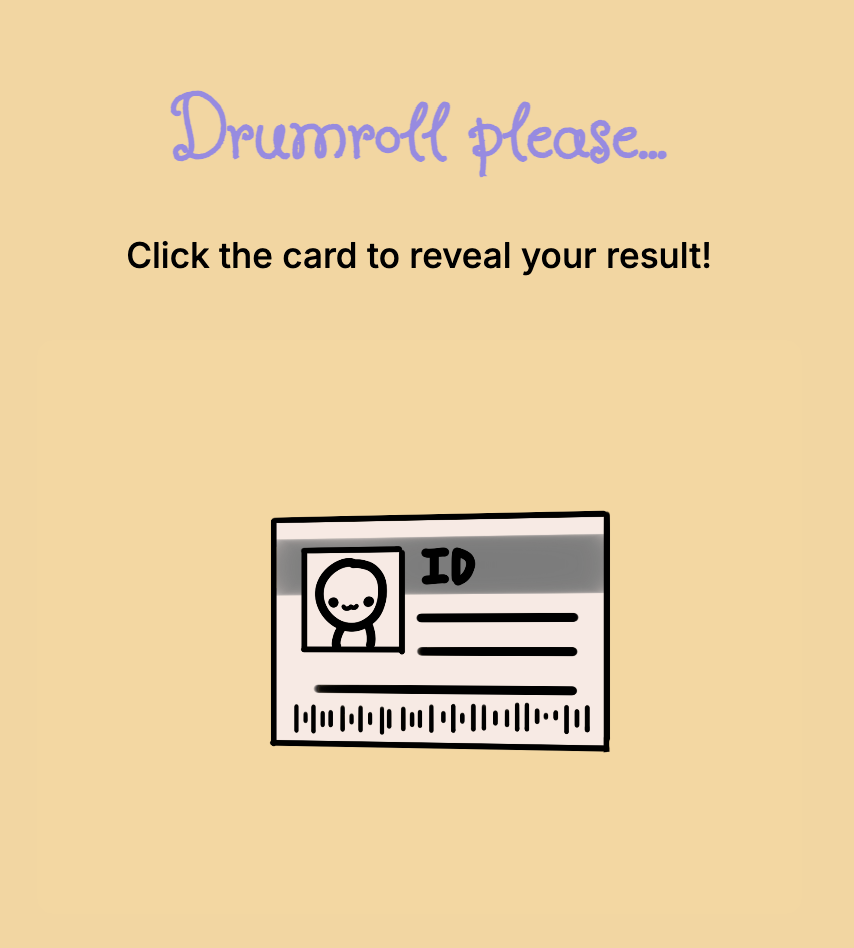

"Pillow Talk" is a visually-rich personality quiz that reimagines the classic "which friend are you" format through an artistic and interactive narrative. This project guides players through a friend group's sleep over party to reveal which character they embody the most. Developed using p5.js, HTML, and CSS, "Pillow Talk" explores how programming tools can enhance storytelling through highly immersive, interactive, and aesthetically pleasing user experiences.
